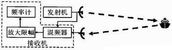
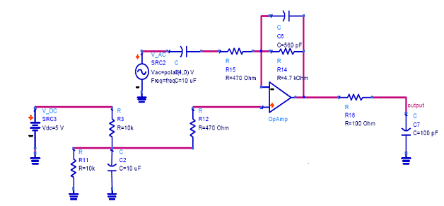
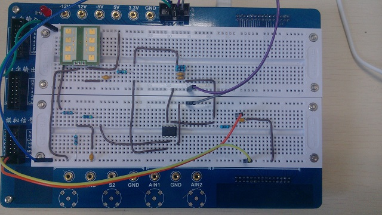
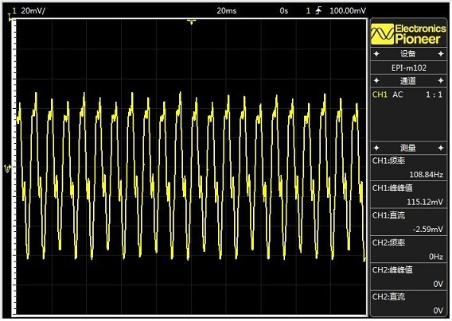
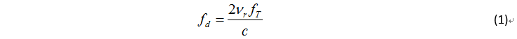
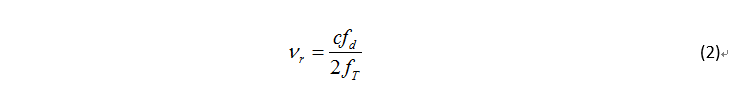
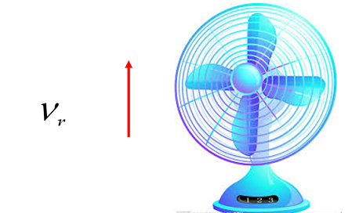

自制连续波（CW）雷达测量小风扇的转速
连续波雷达简介
连续波雷达就是发射连续波信号的雷达。信号是单一频率的或多频率的，或者频率是经过调制的（频率随时间按一定规律变化）。非调制(单一频率)连续波雷达能对相当距离范围内的具有任何速度的目标进行测速，而脉冲雷达只有采用相当复杂的技术才能具备这一性能。因此，连续波雷达容易区分活动目标，适合于检测单一活动目标。连续波雷达的主要缺点是信号泄漏（发射信号及其噪声直接漏入接收机）和背景干扰（近距离背景的反射）。
连续波雷达工作原理
- 单频连续波雷达（即此处用的CW雷达）可以利用多普勒效应对目标测速，但不能测距。
- 扫频连续波雷达既可以测量物体的运动速度又可以测量物体的距离，因为我们使用的CW雷达，扫频连续波雷达的原理此处不详细描述。
单频连续波雷达持续发出固定频率的电磁波，当电磁波遇到运动中的物体返回到雷达的接收天线，因为多普勒效应，雷达接收到的电磁波的频率发生改变，物体的运动速度信息包含在发射频率与接收频率的差频中，我们通过对多普勒频率的处理即可得到物体的运动速度信息。
处理方式是：对接收天线接收到的信号和发射信号进行混频后，可以得到两个频率的差和两个频率的和两个频率，我们只需要在混频器之后加一个低通滤波器即可滤掉高频信号，从而得到发射与接收信号的差频。根据多普勒效应的公式即可得到运动物体的速度。
下图为连续波雷达的原理框图：

器件清单
- 雷达传感器IPM-165 – 1个
- 易派EPI-m102型实验平台 – 1套
- 运行windows系统的电脑 – 1台
- 运算放大器op37gp – 1个
- 电容 – 若干
- 电阻 – 若干
- 导线杜邦线 – 若干
搭建雷达平台
雷达传感器IPM-165集成了CW雷达的信号发生器、发射天线、接收天线、混频器这些部分，但是若要使CW正常工作，还需要一个滤波放大电路：

我们根据滤波放大电路的电路图在易派平台的面包板上面搭建好电路，然后把雷达的输出接在滤波放大电路之上，电路最终搭建好是下图这样：

将易派平台连接到电脑的USB接口，然后用电脑上的易派软件打开电源，打开示波器。
至此，雷达平台已经搭建完成。
测量风扇转速
我们取桌面上的小台扇作为测量对象，将上一步骤搭建好的CW雷达平台置于小台扇之下，（注意不要将雷达置于风扇正下方，如果置于正下方，风扇扇叶与雷达只有切向速度，没有径向速度，雷达是测不到风扇素的的。）安置正确后，调整示波器，我们即可以看到雷达产生的波形：

连续波雷达测物体运动速度公式：

式中，fT为发射频率；c为传播速度:3x10^8m/s；Vr为目标对雷达的相对速度（或径向速度）。
由(1)式得，物体相对于雷达的运动速度Vr为：

由示波器结果可以看出，雷达测得的fd=108.84Hz,又已知雷达发射频率fT=2.4GHz，c=3x10^8m/s
求得，风扇相对于雷达的径向速度为：

为简化计算，风扇扇叶相对于雷达的速度近似等于风扇的切向速度，又得风扇的半径r=10cm 由此可得风扇的角速度:
风扇转速：
从网上搜集资料得到普通风扇的转速范围为500转/分钟—1500转/每分钟，考虑到我们使用的是桌面式的小风扇，转速相应比普通风扇低一些，可以说雷达测得风扇的转速650转/分钟这个结果基本是正确的。